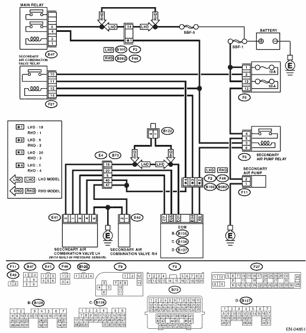

DTC DETECTING CONDITION:
Detected when two consecutive driving cycles with fault occur.
CAUTION:
After repairing or replacing the defective part, perform the Clear Memory Mode  and Inspection Mode .
and Inspection Mode .
WIRING DIAGRAM:


| STEP | CHECK | YES | NO |
|
Is the actual difference with barometric pressure 50 mmHg (6.7 kPa, 2.0 inHg, 0.97 psig) or more? |
Replace the secondary air combination valve LH. NOTE: The secondary air pressure sensor is a built-in part of the secondary air combination valve LH. |
|
|
|
Is the voltage 10 V or more? |
|
Temporary poor contact occurs. Check the poor contact of connector. |
|
|
Is the resistance 1 MΩ or more? |
Repair the short to power supply in the harness between the secondary air pump relay and secondary air pump connector. |
Replace the secondary air pump relay. |